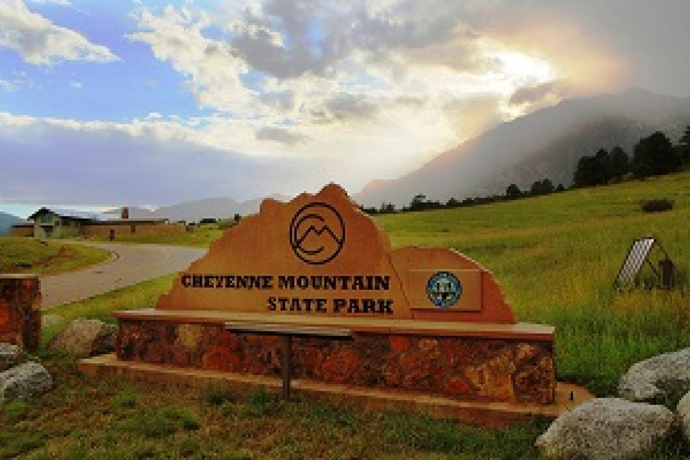

Posted on June 11, 2025
Top 5 Locations for Wedding Photos in Colorado Springs
Colorado Springs offers a stunning variety of backdrops that can transform your wedding photos from beautiful to breathtaking. Whether you're after towering red rocks, serene forest paths, or historic charm, these top five locations deliver unforgettable visuals—and each one pairs perfectly with golden hour light.
1. Garden of the Gods
Garden of the Gods is one of Colorado Springs' most iconic and sought-after locations for wedding and engagement photography. Its massive red rock formations create a dramatic and natural frame for portraits. The park's open spaces and winding trails give couples plenty of variety, and the warm hues at sunset elevate every shot. As a local photographer, I know the best spots to avoid crowds and capture intimate moments.

2. Palmer Park
A hidden gem, Palmer Park offers panoramic views of Pikes Peak, sandstone cliffs, and quiet forest trails. It's ideal for couples who want a mix of nature and intimacy without leaving the city. The variety of textures—from pine forests to rocky outcroppings—makes Palmer Park perfect for both romantic close-ups and sweeping landscape portraits.

3. Downtown Colorado Springs
For couples who love a modern, urban vibe with mountain charm, downtown Colorado Springs is a fantastic choice. With brick alleys, murals, and vintage storefronts, the area offers an artsy contrast to Colorado’s natural settings. It’s especially beautiful for twilight sessions when the city lights begin to glow.

4. Cheyenne Mountain State Park
This location provides breathtaking views of the Front Range and a peaceful, rustic atmosphere. The park is perfect for couples who want to capture that true Colorado vibe—mountain peaks, wildflowers, and golden light peeking through the trees. It’s also less crowded than some tourist-heavy spots, offering privacy and calm.
5. The Broadmoor Hotel Grounds
If you're looking for a touch of luxury in your wedding photography, the historic Broadmoor Hotel delivers. With manicured gardens, lake views, and elegant architecture, it's perfect for couples who want timeless elegance alongside Colorado’s natural beauty. I’ve photographed weddings here that blended glamour and mountain spirit beautifully.

These five locations are some of my favorites as a wedding photographer in Colorado Springs. Whether you're planning an elopement, a full-day wedding, or a golden-hour session, I can guide you to the perfect spot for unforgettable images. Want help choosing your location? Let’s chat!